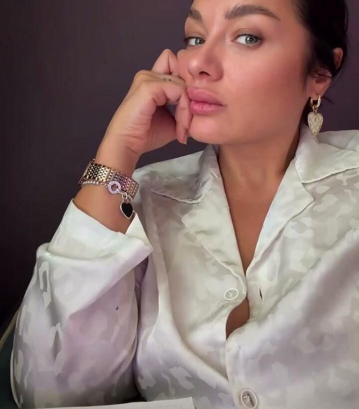
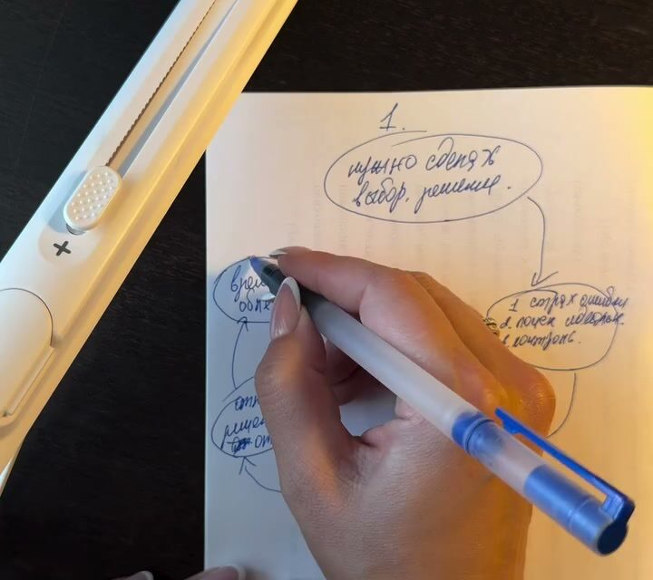
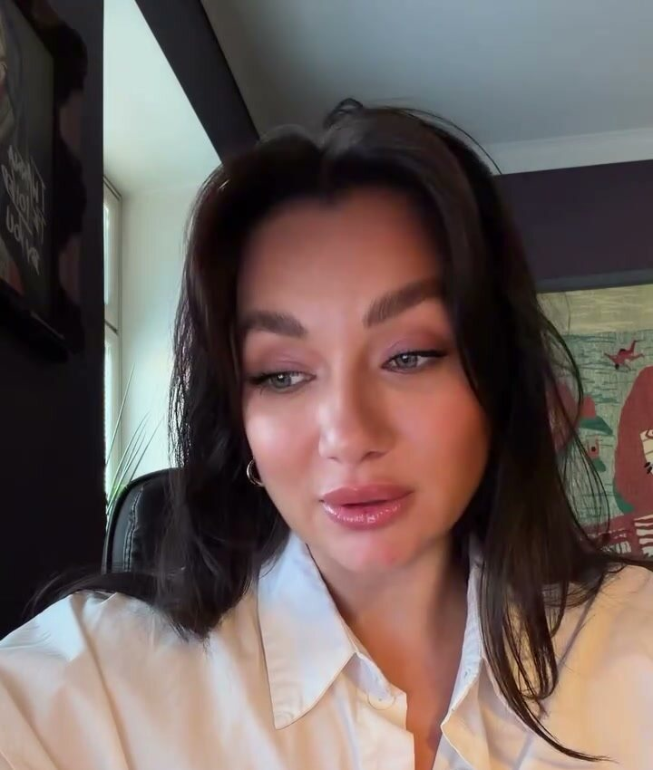
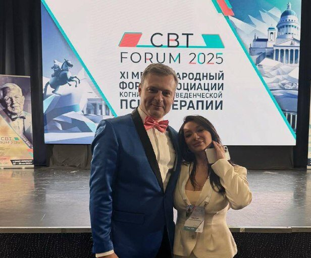

Начну с понедельника
Группа для тех, кто знает, что надо, но не делает. Шесть онлайн-встреч в когнитивно-поведенческом подходе: разбираемся, почему откладываете именно вы, и возвращаем силы на рутину и свои цели.
Старт в среду, 13 января. Не в понедельник.

Оксана ПавловаОткладывают все. Причины у всех разные
В КПТ мы начинаем с записи: что откладываю, что говорю себе, что делаю вместо этого. Одна и та же «лень» оказывается четырьмя разными историями.
| Что откладываю | Что говорю себе | Что делаю вместо | Что за этим стоит |
|---|---|---|---|
| Отчёт для руководителя | «Сяду, когда будет время сделать нормально» | Разбираю почту, навожу порядок в файлах | Перфекционизм: страшно сделать неидеально |
| Позвонить врачу | «Сейчас неудобно, завтра наберу» | Листаю ленту, пока тревога не уляжется | Тревога: избегаю неприятного |
| Спорт, английский, свой проект | «Начну с понедельника, сегодня нет сил» | Лежу с телефоном до ночи | Истощение: сил нет даже на отдых |
| Документы, письма, бытовые дела | «Да кому это вообще нужно» | Срочно помогаю другим с их делами | Чужая цель: непонятно, зачем это мне |
Пока не ясно, какая причина ваша, таймеры и списки дел работают неделю. Поэтому группа начинается не с тайм-менеджмента, а с вас.
Шесть сред вместо ещё одного понедельника
Прокрастинация — самый частый запрос, с которым ко мне приходят. И почти никогда дело не в лени. За откладыванием стоят перфекционизм, тревога, усталость, которую нечем восстановить, или цель, которая на самом деле не ваша.
В группе мы находим вашу причину и работаем с ней инструментами КПТ: замечаем мысли, которые тормозят, проверяем их на реальность и учимся начинать маленькими шагами между встречами.

Почему я откладываю
Разбираем свою цепочку: ситуация, мысль, чувство, избегание. У каждого она своя, и с неё всё начинается.
Мысли, которые тормозят
«Сделаю потом», «надо идеально», «всё равно не получится». Учимся ловить их в моменте и проверять.
Силы на рутину
Почему нет энергии на обычные дела и как её вернуть без героизма и подъёмов в пять утра.
Внимание
Телефон, ленты, десять дел одновременно. Возвращаем способность держать одно дело дольше пяти минут.
Свои цели
Отличаем свои желания от «надо» и «у всех так». Без этого любой план ломается к февралю.
Как не откатиться
Личный план на месяцы вперёд и что делать, когда снова поймаете себя на «с понедельника».
Почему я откладываю?
Десять утверждений. Отмечайте, как часто это про вас за последний месяц, и тест покажет, какая причина у вас главная. Ответы никуда не отправляются.
Это не диагностика, а повод присмотреться к себе. Точнее разберёмся на встрече.
С чего можно начать
Тест и гайд «5 причин откладывать»
Тест на этой странице, гайд в Telegram-канале: что делать с каждой из причин уже на этой неделе.
понятьЛекция «Почему нет сил на рутину и свои цели»
Живой эфир 10 декабря, бесплатно. Потом в записи с рабочей тетрадью за 990 ₽.
разобратьсяГруппа «Начну с понедельника»
Шесть онлайн-встреч, до десяти человек, практика между встречами. Главная программа.
сдвинутьсяЛичная консультация
55–60 минут, онлайн или очно в Петербурге. Тревога, депрессивные состояния, отношения, травматичный опыт.
глубже

Оксана Павлова
Я психолог в когнитивно-поведенческом подходе. Консультирую с июля 2023 года, многие клиенты приходят по рекомендациям. Использую элементы схема-терапии и диалектико-поведенческой терапии, прошла базовый тренинг EMDR.
Чаще всего ко мне приходят с прокрастинацией и ощущением, что жизнь откладывается на потом. Ещё с тревогой, депрессивными состояниями и выгоранием, с самокритикой, со сложностями в отношениях. Я люблю кино и литературу, поэтому на консультациях мы иногда говорим о героях фильмов: так проще увидеть себя со стороны.
Потратьте этот год вдумчиво: … на осознанность вместо автопилота, на меньше «я должна», но и на меньше откладывания жизни на потом.из моего канала, январь 2026
- СПбГИПСРбакалавриат по психологии, индивидуальное консультирование
- Ассоциация КПТбазовый курс 311 ак. ч, продвинутый 386 ак. ч, КПТ перфекционизма
- Центр обучения EMDRбазовый тренинг ДПДГ, 36 ак. ч
- Высшая школа эмоционального интеллектапсихоаналитическое консультирование невротических расстройств, 144 ч
Что обычно спрашивают
Я пробовала таймеры, планеры и приложения. Чем это отличается?
Таймеры помогают, когда причина в организации дел. Чаще она в другом: в страхе сделать плохо, в тревоге, в усталости, в цели, которая не ваша. Мы сначала находим причину, а инструменты подбираем под неё.
Почему старт в среду?
Потому что «с понедельника» мы все уже начинали. Среда — день, когда начинают, а не обещают.
Это терапия или курс?
Это терапевтическая группа с понятной структурой. У каждой встречи есть тема и упражнения, но главное происходит в разговоре и в практике между встречами. Лекций в чистом виде не будет.
Как проходят встречи онлайн?
В Zoom, раз в неделю вечером по Москве. Камера включена, это важно, чтобы группа работала. Подключиться можно из любого города и страны.
Кому группа не подойдёт?
Если сейчас острое состояние, мысли о том, чтобы не жить, или идёт подбор медикаментов, начинать лучше с индивидуальной работы и врача. Поэтому перед стартом мы коротко знакомимся, и я честно скажу, подходит ли вам группа.
Что если я пропущу встречу?
Пришлю материалы и задание, на следующей встрече догоните. Записи встреч не ведём: в группе говорят о личном.
Начать можно не с понедельника
Напишите мне в Telegram. Познакомимся на 20 минут, расскажете, что откладываете и почему, и решим, что вам подойдёт: группа, личная работа или пока гайд и лекция.